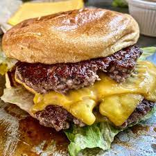

Smashburger Recipe

Description
This recipe instructs you on how to make my favorite type of burger, the smashburger. A quick and esy way to make a comforting sandwich with crispy edges and dripping in grease.
Ingredients
1/4 lbs 80/20 ground beef
potato roll
mayo
salt
pepper
a good melting cheese, such as american
high smoke point oil, such as canola
Steps
preheat a cast iron skillet over medium high heat
add approximately 1 tbs of canola oil to skillet
roll beef into a ball, place beef into pan and press flat with a solid turner
salt patty generously
toast bun and prepare with mayo
flip patty after 2 minutes
salt and pepper patty and place slice of cheese
remove patty from skillet and place in bun, cover with bun top